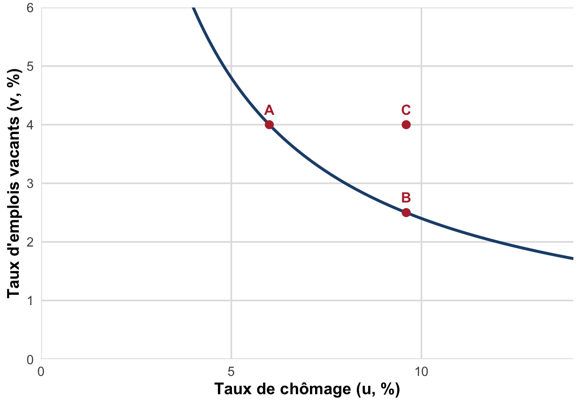
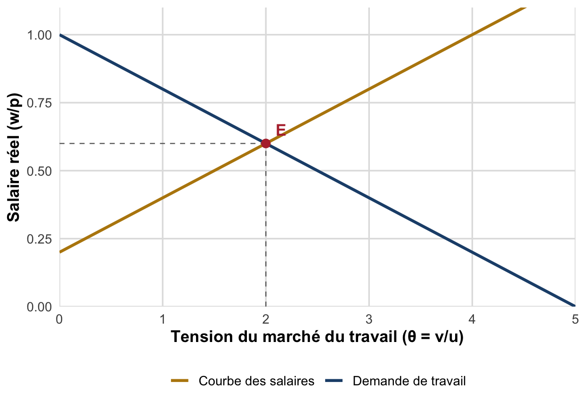
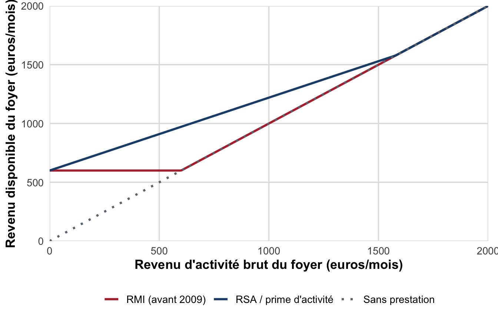

TD 7 : Appariement & trappe à inactivité
Courbe de Beveridge, tension du marché du travail et incitations au retour à l’emploi
Dossier de TD : théorie de l’appariement (Beveridge, modèle DMP, tension θ), puis exercice sur la trappe à inactivité : du RSA à la prime d’activité.
Objectifs de la séance
À l’issue de ce TD, vous saurez :
- Définir la courbe de Beveridge et distinguer un déplacement le long de la courbe d’un déplacement de la courbe.
- Calculer la tension du marché du travail \(\theta = v/u\) et interpréter ses variations.
- Résoudre algébriquement et représenter graphiquement l’équilibre du modèle d’appariement (DMP) et son évolution suite à un choc.
- Calculer, à partir du barème du RSA, un taux marginal de prélèvement implicite et un gain net au retour à l’emploi.
- Relier la notion de trappe à inactivité à la théorie de la recherche d’emploi (salaire de réserve) et discuter l’apport de la réforme de 2016 (prime d’activité).
Pré-requis : Chapitre II, Partie 2, §IV (courbe de Beveridge, modèle DMP, tension \(\theta\)) ; Chapitre III, §II, axe 3 (activation, trappe à inactivité) ; TD 5 et TD 6 (néoclassique, WS-PS, Okun-Phillips).
Ce dossier s’appuie sur les enseignements de M. Ouedraogo (CERDI, Université Clermont Auvergne)1 ainsi que sur les ressources complémentaires du Chapitre III consacrées à la trappe à inactivité et aux demandeurs d’emploi non indemnisables. Les trois premiers exercices reprennent la théorie de l’appariement vue en cours (courbe de Beveridge, modèle de Diamond-Mortensen-Pissarides). Le quatrième exercice, nouveau, applique la théorie de la recherche d’emploi à un cas concret de politique économique française : le passage du RMI au RSA puis à la prime d’activité.
Exercice 1 : Définitions et QCM : la théorie de l’appariement
1.1 Définitions courtes
En une phrase chacune, définissez :
- La courbe de Beveridge.
- La tension du marché du travail \(\theta\).
- La situation de « plein emploi » au sens de Beveridge.
- Le chômage frictionnel, et en quoi il diffère du chômage d’inadéquation (mismatch).
Rappel : le modèle DMP. Les modèles d’appariement, développés par Peter Diamond, Dale Mortensen et Chris Pissarides (Diamond 1982; Mortensen et Pissarides 1994) (distingués par le prix Nobel d’économie 2010) expliquent le niveau d’emploi et de salaire par la confrontation de deux relations fonctions de \(\theta = v/u\) et du salaire réel \(w/p\) : la demande de travail (décroissante en \(\theta\)) et la courbe des salaires (croissante en \(\theta\)).
1.2 QCM
Pour chaque question, une seule réponse est correcte.
1. La courbe de Beveridge représente une relation :
- croissante entre le taux de chômage \(u\) et le taux d’emplois vacants \(v\).
- décroissante entre le taux de chômage \(u\) et le taux d’emplois vacants \(v\).
- décroissante entre le taux de chômage \(u\) et le salaire réel \(w/p\).
- indépendante de la conjoncture économique.
2. Le point d’intersection de la courbe de Beveridge avec la droite de pente 45° (\(u = v\)) correspond à une situation où :
- le chômage est nul.
- le chômage est exclusivement d’origine keynésienne.
- chômeurs et emplois vacants sont en nombre égal, sans tension particulière sur le marché du travail.
- la tension \(\theta\) est maximale.
3. Toutes choses égales par ailleurs, une hausse de \(\theta = v/u\) signifie :
- qu’il devient plus facile pour une entreprise de pourvoir un poste vacant.
- qu’il devient plus facile pour un chômeur de retrouver un emploi.
- que le taux de chômage augmente nécessairement.
- que le salaire réel baisse nécessairement.
4. Un choc de demande positif, à courbe de Beveridge inchangée, se traduit par :
- un déplacement le long de la courbe vers le bas-droite (moins d’emplois vacants, plus de chômage).
- un déplacement le long de la courbe vers le haut-gauche (plus d’emplois vacants, moins de chômage).
- un déplacement de la courbe elle-même vers l’extérieur.
- aucun effet sur \(u\) ni sur \(v\).
5. Un déplacement de la courbe de Beveridge vers l’extérieur (il faut désormais davantage d’emplois vacants pour atteindre un même taux de chômage) traduit le plus souvent :
- une amélioration du processus d’appariement.
- une détérioration du processus d’appariement (inadéquation des qualifications, hystérèse).
- une baisse du taux de chômage structurel.
- une hausse de la demande agrégée.
6. Dans le modèle DMP, la courbe des salaires est croissante en \(\theta\) parce que :
- les entreprises fixent librement le salaire nominal.
- une probabilité plus élevée de retrouver un emploi renforce le pouvoir de négociation des travailleurs, qui exigent un salaire réel plus élevé.
- la productivité du travail diminue quand \(\theta\) augmente.
- le taux de marge des entreprises est constant.
7. Selon les conclusions des modèles d’appariement, deux leviers de politique de l’emploi permettent d’agir sur le chômage. Lesquels ?
- La baisse des impôts sur les sociétés et la hausse du SMIC.
- La flexibilisation des créations/destructions d’emplois et l’amélioration de l’efficacité de l’appariement (accompagnement, incitations, mobilité).
- L’indexation des salaires sur les prix et la baisse des taux d’intérêt.
- La relance budgétaire et la dévaluation monétaire.
Exercice 2 : Lecture de données et de graphique
2.1 Lire la courbe de Beveridge
Questions
- Calculez la tension \(\theta\) aux points A et B. Lequel des deux correspond à une conjoncture la plus favorable ? Justifiez.
- Le point A et le point B sont-ils situés sur la même courbe de Beveridge ? Comment qualifiez-vous le mouvement de A vers B ?
- Le point C n’est pas situé sur la même courbe que A et B, bien qu’il partage le même taux de chômage que B. Que s’est-il passé entre la situation B et la situation C ? Citez deux causes possibles évoquées en cours.
2.2 Lire un tableau de données (DARES, 2016)
Le tableau ci-dessous, construit à partir des données de la DARES sur la couverture des demandeurs d’emploi par une allocation chômage (30 septembre 2014), décompose la situation des personnes inscrites à Pôle emploi selon leur statut d’indemnisation et leur âge.
| Statut (en % de la catégorie) | Ensemble | Moins de 25 ans | 25-49 ans | 50 ans ou plus |
|---|---|---|---|---|
| Indemnisables par l’assurance chômage | 51 | 49 | 52 | 51 |
| Indemnisables par l’État (dont ASS) | 10 | 2 | 8 | 18 |
| Non indemnisables, dont : | 39 | 49 | 39 | 31 |
| - bénéficiaires du RSA | 12 | 3 | 14 | 10 |
| - non bénéficiaires du RSA | 21 | 39 | 19 | 17 |
| - inscrits en catégorie D ou E (formation, etc.) | 6 | 6 | 6 | 4 |
NoteSource et champ
Personnes inscrites à Pôle emploi ou dispensées de recherche d’emploi au 30 septembre 2014, France entière. Source : Pôle emploi, fichier historique statistique ; calculs DARES. Les demandeurs d’emploi non indemnisables, DARES Analyses, 2016. Les totaux peuvent différer légèrement de 100 en raison des arrondis.
Questions
- Quelle part des demandeurs d’emploi n’est couverte par aucune allocation chômage (ni assurance, ni État), et ne perçoit pas le RSA ? Comparez ce chiffre entre les moins de 25 ans et les 50 ans ou plus. Comment l’expliquez-vous (indice : durée de cotisation requise) ?
- Calculez, pour l’ensemble des demandeurs d’emploi non indemnisables, la part qui perçoit malgré tout le RSA (12 % sur 39 %, en proportion).
- En quoi une proportion importante de demandeurs d’emploi sans aucune couverture peut-elle, selon vous, avoir un effet ambigu sur l’intensité de recherche d’emploi ? Distinguez un effet qui accélère le retour à l’emploi et un effet qui pourrait au contraire le freiner. (Vous répondrez plus complètement à cette question à l’Exercice 4.)
Exercice 3 : Exercice analytique : l’équilibre du modèle DMP
On considère un marché du travail décrit par les deux relations suivantes, fonctions de la tension \(\theta = v/u\) et du salaire réel \(w/p\) :
\[ \text{Demande de travail : } \quad \frac{w}{p} = 1 - 0{,}2\,\theta \]
\[ \text{Courbe des salaires : } \quad \frac{w}{p} = 0{,}2 + 0{,}2\,\theta \]
3.1 Interprétation et calcul
- Justifiez économiquement le signe de la pente de chacune des deux relations.
- Résolvez algébriquement le système pour trouver la tension d’équilibre \(\theta^*\) et le salaire réel d’équilibre \((w/p)^*\).
- Vérifiez votre résultat sur le graphique ci-dessous.

3.2 Statique comparative : un choc sur les revenus de remplacement
Une réforme rend l’indemnisation chômage plus généreuse. Pour tout niveau de \(\theta\), les travailleurs négocient désormais un salaire réel plus élevé de 0,15 (la nouvelle courbe des salaires devient \(w/p = 0{,}35 + 0{,}2\,\theta\)).
- Laquelle des deux courbes se déplace, et dans quel sens ?
- Recalculez le nouvel équilibre \((\theta^{*\prime}, (w/p)^{*\prime})\).
- Que devient le taux de chômage d’équilibre, à taux d’emplois vacants \(v\) inchangé ? Justifiez à partir de la définition de \(\theta\).
AstuceIndice
Représentez la nouvelle courbe des salaires sur un même graphique que la question 3.1 pour visualiser le déplacement de l’équilibre avant de répondre à la question 3.
Exercice 4 : NOUVEAU : la trappe à inactivité, du RSA à la prime d’activité
Trappe à inactivité (ou à pauvreté) : situation où la reprise d’un emploi peu rémunéré n’améliore que faiblement le revenu disponible d’un allocataire, du fait de la réduction des prestations sociales à mesure que le revenu d’activité augmente. Le taux marginal de prélèvement implicite, la part de tout euro supplémentaire gagné qui est « reprise » par la baisse des prestations, peut approcher 100 %, ce qui décourage le retour à l’emploi.
AstuceActualisation : chronologie RMI → RSA → prime d’activité
1988 : création du RMI. 2009 : le RSA remplace le RMI et l’allocation de parent isolé ; il se compose d’un RSA-socle (équivalent du RMI) et d’un RSA-activité (complément pour travailleurs pauvres). 2016 : la prime d’activité remplace le RSA-activité, dont le taux de non-recours était très élevé (de l’ordre de 60 à 70 % des ayants droit) du fait de sa complexité et de sa stigmatisation ; elle connaît un taux de recours nettement supérieur.
4.1 Le barème du RSA (formule simplifiée)
La formule officielle du RSA s’écrit : \[ \text{RSA} = \big(\text{Montant forfaitaire} + 0{,}62 \times \text{revenus d'activité du foyer}\big) - \text{ressources du foyer} \]
On considère une personne seule sans autre ressource que son revenu d’activité \(y\) (en euros par mois). Le montant forfaitaire est fixé à \(M = 600\) € (valeur arrondie, indicative : ordre de grandeur du montant forfaitaire réel). Les ressources du foyer sont alors égales à \(y\).
- Montrez que la formule se simplifie en \(\text{RSA}(y) = \max(0\,;\, 600 - 0{,}38\,y)\).
- Complétez le tableau suivant (revenu disponible = \(y + \text{RSA}(y)\)) :
| \(y\) (revenu d’activité) | 0 € | 300 € | 600 € | 900 € |
|---|---|---|---|---|
| RSA\((y)\) | ||||
| Revenu disponible |
- Calculez le taux marginal de prélèvement implicite entre chaque palier de 300 €. Que représente-t-il ?
- À partir de quel niveau de revenu d’activité le RSA s’annule-t-il ?
4.2 Comparaison avec un système à taux de retrait de 100 %
On suppose maintenant un système hypothétique, proche du RMI avant 2009 (on néglige ici la période d’intéressement transitoire qui existait aussi sous le RMI, afin d’isoler l’effet du barème général) : l’allocation est retirée à 100 % de chaque euro gagné, soit \(\text{RMI}(y) = \max(0\,;\, 600 - y)\).
- Calculez le revenu disponible pour \(y = 0, 300, 600, 900\) € sous ce régime.
- Quel est le gain net de revenu disponible pour un passage de \(y=0\) à \(y=300\) € d’activité ? Comparez avec votre réponse à la question 4.1.3.
- Commentez le graphique ci-dessous : pourquoi les trois courbes finissent-elles par converger ?

4.3 Question de réflexion (10-15 lignes)
En mobilisant la théorie de la recherche d’emploi (notion de salaire de réserve, cf. modèle d’appariement de l’Exercice 3) et les éléments empiriques du cours (taux de non-recours au RSA-activité de 60 à 70 %), discutez la question suivante :
Le passage du RSA-activité à la prime d’activité en 2016 a-t-il permis de résorber la trappe à inactivité ?
Vous distinguerez explicitement deux mécanismes différents : (i) l’effet d’un taux marginal de prélèvement implicite élevé sur les incitations financières au retour à l’emploi (via le salaire de réserve), et (ii) l’effet du non-recours sur l’accès effectif aux droits, indépendamment du niveau des incitations financières. Vous pourrez également relier votre réponse au constat de l’Exercice 2.2 sur les demandeurs d’emploi sans aucune couverture.
AstucePour aller plus loin
- B. Gomel & D. Méda (2011), « Le RSA : un dispositif inadapté », La Vie des idées, disponible sur laviedesidees.fr : un bilan critique détaillé du RSA-activité et de son non-recours.
- DARES (2016), Les demandeurs d’emploi non indemnisables, DARES Analyses : la note utilisée à l’Exercice 2.2.
- Sur la relation entre protection de l’emploi et chômage (nuance empirique évoquée en cours) : osonscauser.com/loi-travail-baisse-chomage-cest-faux-dit-science-economique et la vidéo associée sur YouTube.
- Sur les fondements théoriques du modèle d’appariement : les articles originaux de Diamond (1982) et de Mortensen & Pissarides (1994) (Diamond 1982; Mortensen et Pissarides 1994), cités dans le résumé du Chapitre II.
Les références
Diamond, Peter A. 1982. « Wage Determination and Efficiency in Search Equilibrium ». Review of Economic Studies 49 (2): 217‑27.
Mortensen, Dale T., et Christopher A. Pissarides. 1994. « Job Creation and Job Destruction in the Theory of Unemployment ». Review of Economic Studies 61 (3): 397‑415.
Notes de bas de page
Dossier rédigé d’après les cours de M. Ouedraogo (2025-2026), CERDI, Université Clermont Auvergne, et les ressources complémentaires DARES (2016), Les demandeurs d’emploi non indemnisables, et B. Gomel & D. Méda, Prestations sociales et trappe à inactivité (chapitre III).↩︎